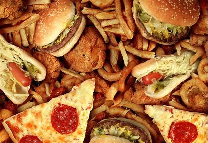
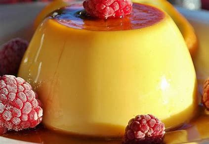

Choose Your Favourite Food Item
INFO
Maisha Maliha
WB2302029
Contact With Us
Fast Food
- Fast Foods
- Burger
- I love to eat and cook many new and different food items everyday. But my favorite food item is burger. Burger is Germany based food and it tastes very delicious and yummy. I always go to a burger stall and eat 2-3 burgers at a time. A burger is a sandwich consisting of sliced vegetables and a meat or aloo patty placed between two buns.
- Pizza
- My favorite food is pizza because it is delicious, has many different toppings to choose from, and you can get it anytime.There are many different types of foods that people love to eat. Some of these foods are french fries, steak, pasta, and especially pizza. Pizza is a very common fast food for many people around the world because of its simple cooking process and wide variety of ingredients.It is an Italian dish that is made up of a base of dough, tomato sauce, and cheese. The toppings can vary depending on one's preference, and they can range from vegetables like bell peppers, onions, and mushrooms to meat like pepperoni, sausage, and chicken.
- French fries
- I like to eat and make French fries.French fries (North American English), chips (British English and other national varieties), finger chips (Indian English), french-fried potatoes, or simply fries, are batonnet or allumette-cut deep-fried potatoes of disputed origin from Belgium or France. They are prepared by cutting potatoes into even strips, drying them, and frying them, usually in a deep fryer. Pre-cut, blanched, and frozen russet potatoes are widely used, and sometimes baked in a regular or convection oven; air fryers are small convection ovens marketed for frying potatoes.

Burger
Pizza
French Fries
Desserts
- Desserts
- Chocolate Cake
- I love chocolate cake very much.Chocolate cake is a delicious and a popular dessert that is loved by people of all ages. It is an all-time favorite cake and is enjoyed on special occasions or even on a regular day.Chocolate cake is made with ingredients like flour, cocoa powder, sugar, butter, eggs, and baking powder. Some recipes may also call for other ingredients like nuts and chocolate chips.he history of chocolate cake can be traced back to the Victorian era when it first became popular. It was originally made with dark chocolate and was often served with cream or custard for added flavor. Today, chocolate cake is still a popular dessert, but it has evolved to include variations such as white and red velvet cakes.
- Pudding
- I do like pudding because of it's texture.Pudding is a kind of food that can be either a dessert or a savory dish. The word pudding is believed to come from the French boudin, originally from the Latin botellus, meaning "small sausage", referring to encased meats used in Medieval European puddings.in Japan, they made creamy pudding and sell it on every convenience store.Every age of people love to eat it cause it's very smooth and soft.
Chocolate Cake
Pudding

Answer no.1
ul tag : The 'ul' tag defines an unordered (bulleted) list.
ol tag : The 'ol' tag defines an ordered list. An ordered list can be numerical or alphabetical.
li tag : The 'li' tag defines a list item.The 'li' tag is used inside ordered lists(ol), unordered lists (ul), and in menu lists (menu).In 'ul' and 'menu', the list items will usually be displayed with bullet points.In 'ol' tag, the list items will usually be displayed with numbers or letters.
Answer no.2
The (td) tag defines a standard data cell in an HTML table.
An HTML table has two kinds of cells:
Header cells - contains header information (created with the (th) element)
Data cells - contains data (created with the td element)
The text in (td) elements are regular and left-aligned by default.
The text in (th) elements are bold and centered by default.
Answer no. 3
The 'a' tag defines a hyperlink in HTML.